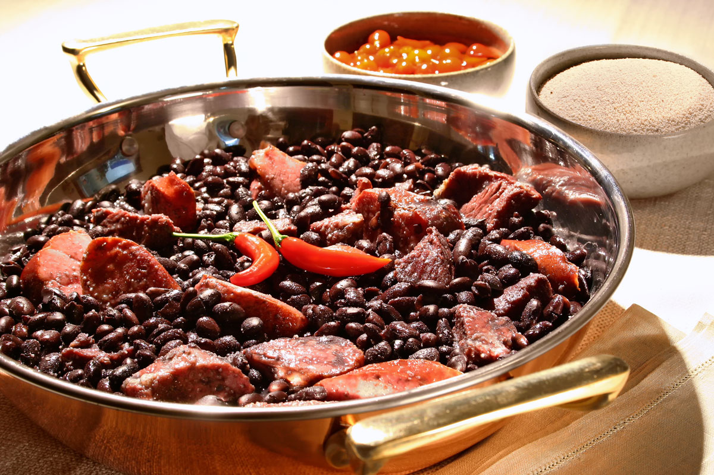
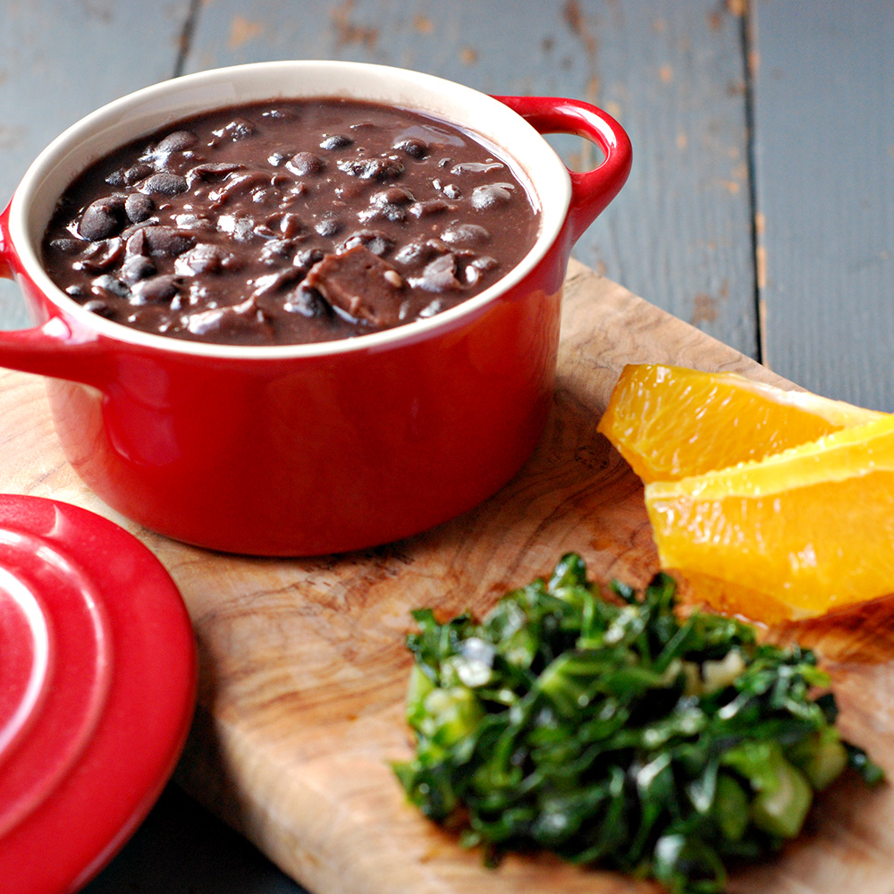

Feijoada
Ingredients
- 1 tablespoon olive oil
- 1 ½ cups chopped onion, divided
- ½ cup green onions, chopped
- 1 clove garlic, chopped
- 1 (12 ounce) package dry black beans, soaked overnight
- 2 smoked ham hocks
- 8 ounces diced ham
- ½ pound thickly sliced bacon, diced
- 2 bay leaves, crushed
- ⅛ teaspoon ground coriander
- salt and pepper to taste
- ½ cup chopped fresh cilantro (Optional)
- ¼ cup chopped fresh parsley (Optional)

Directions
Step 1
Heat oil in a large pot or Dutch oven. Add 3/4 cup chopped onion, green onions, and garlic; cook and stir until softened, about 4 minutes. Pour in soaked beans and fill with enough water to cover beans by 3 inches. Bring to a boil, then reduce heat to medium-low, and simmer uncovered for 2 hours, or until tender.
Step 2
While beans are cooking, place ham hocks in a smaller pot with 1/4 cup chopped onion. Cover with water and simmer until meat pulls off of the bone easily, about 1 hour. Drain and add to beans.
Step 3
Meanwhile, preheat the oven to 375 degrees F (190 degrees C).
Step 4
Place ham, bacon, and remaining onion in a baking dish. Bake until mixture is crispy, 15 minutes.
Step 5
Drain bacon and ham mixture and add to beans. Season with bay leaves, coriander, salt, and pepper. Simmer, uncovered, 30 minutes more.
Step 6
Stir in chopped cilantro and parsley just before serving.